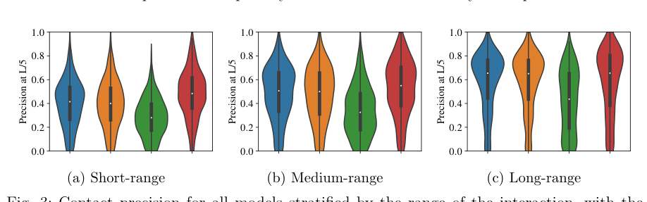
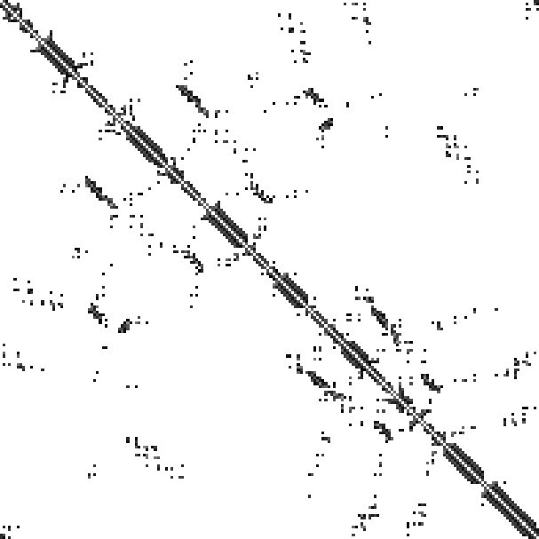
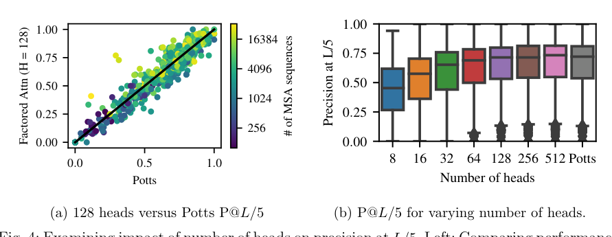
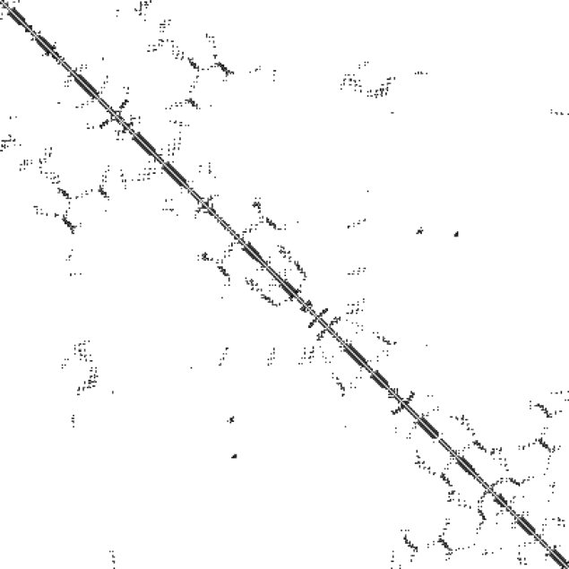
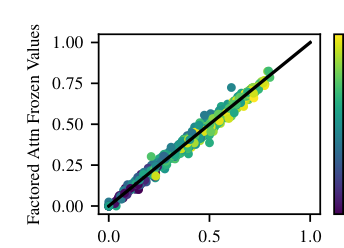
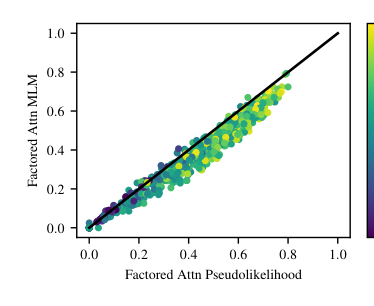

Unified Model of Protein Evolution
Interpreting Potts and Transformer Protein Models Through the Lens of Simplified Attention
Abstract
The established approach to unsupervised protein contact prediction estimates coevolving positions using undirected graphical models. This approach trains a Potts model on a Multiple Sequence Alignment. Increasingly large Transformers are being pretrained on unlabeled, unaligned protein sequence databases and showing competitive performance on protein contact prediction. We argue that attention is a principled model of protein interactions, grounded in real properties of protein family data. We introduce an energy-based attention layer, factored attention, which, in a certain limit, recovers a Potts model, and use it to contrast Potts and Transformers. We show that the Transformer leverages hierarchical signal in protein family databases not captured by single-layer models. This raises the exciting possibility for the development of powerful structured models of protein family databases.
Introduction
Inferring protein structure from sequence is a longstanding problem in computational biochemistry. Potts models, a particular kind of Markov Random Field (MRF), are the predominant unsupervised method for modeling inter-actions between amino acids. Potts models are trained to maximize pseudolikelihood on alignments of evolutionarily related proteins. [1][2][3] Features derived from Potts models were the main drivers of improved performance at the CASP11 competition. 4 Potts models were subsequently used as input features for top performing supervised neural network models in CASP13. [5][6][7] Inspired by the success of BERT, 8 GPT 9 and related unsupervised models in NLP, a line of work has emerged that learns features of proteins through self-supervised pretraining. [10][11][12][13][14] This new approach trains Transformer 15 models on large datasets of protein sequences. Pretrained model performance raises questions about the importance of data and model scale, 11,16 whether neural features compete with evolutionary features extracted by established bioinformatic methods, 12 and the benefits of transfer learning. [17][18][19] In CASP14, Alphafold2 achieved breakthrough performance by replacing the Potts model with an attention-based model that directly used the MSA as input. 20 This approach was adapted subsequently in RoseTTAFold. 21 The performance of these methods established attention as state-of-the-art for extracting features from MSAs. This raises a natural question of how Potts models and attention mechanisms are related.
In this paper, we investigate the ways in which attention-based models and Potts models trained on alignments can learn meaningful inter-actions in biological sequence data. To do so, we introduce a simplified energy-based attention model trained on alignments, factored attention, which interpolates between the standard attention mechanism and Potts models. We show that factored attention can successfully share parameters across positions within a family or share amino acid features across hundreds of families.
Background
Proteins are polymers composed of amino acids and are commonly represented as strings. Along with this 1D sequence representation, each protein folds into a 3D physical structure. Physical distance between positions in 3D is often a much better indicator of functional interaction than proximity in sequence. One representation of physical distance is a contact map C, a symmetric matrix in which entry C ij = 1 if the beta carbons a of i and j are within 8 Å of one another, and 0 otherwise.
Multiple Sequence Alignments.
To understand structure and function of a protein sequence, one typically assembles a set of its evolutionary relatives and looks for patterns within the set. A set of related sequences is referred to as a protein family, commonly represented by a Multiple Sequence Alignment (MSA). Gaps in aligned sequences correspond to insertions from an alignment algorithm, 22,23 ensuring that positions with similar structure and function line up for all members of the family. After aligning, sequence position carries significant evolutionary, structural, and functional information.
Coevolutionary Analysis of Protein Families.
The observation that statistical patterns in MSAs can be used to predict couplings has been widely used to infer structure and function from protein families. [24][25][26][27]
Methods
To explore how attention and Potts models learn inter-actions in protein sequence data, we compare a number of unsupervised methods which learn contacts with sequence-modeling objectives. Many of these methods are based on the formalism of Markov Random Fields a In the case of glycine, the alpha carbon is used.
We do not extend our analysis to supervised contact prediction models which take MRF features as input, as these are outside the scope of this work.
This sequence is part of an MSA of length L with N total sequences. Recall that a fully-connected Pairwise MRF over p variables X 1 , . . . , X p specifies a distribution
For all models below, we can introduce an explicit functional E ✓ (x i ) to capture the marginal distribution of X i . When introduced, we parametrize the marginal with
Potts Models
A Potts model is a fully-connected pairwise MRF with L variables, each representing a position in the MSA. An edge (i, j) is parametrized with a matrix W ij 2 R A⇥A . These matrices are organized into an order-4 tensor which form the parameters of a Potts model. Note that W ij = W ji . The energy functional of a Potts model is given through lookups, namely
Factored Attention
Factored attention has two advantages over Potts for modeling protein families: it shares a pool of amino acid feature matrices across all positions and it estimates O(L) parameters instead of O(L 2 ).
Sharing amino acid features. Many contacts in a protein are driven by similar inter-actions between amino acids, such as many types of weakly polar inter-actions. 28,29 If two pairs of positions (i, j) and (l, m) are both in contact due to the same interaction, a Potts model must estimate completely separate amino acid features W ij and W lm . In order to share amino acid features, we want to compute all energies from one pool of A ⇥ A feature matrices. The simplest way to accomplish this is by associating an L ⇥ L matrix A to every A ⇥ A feature matrix W V . For H such pairs (A, W V ), we could introduce a factorized MRF:
A row-wise softmax is taken to encourage sparse inter-actions and aid in normalization. This model allows the pairs (i, j) and (l, m) to reuse a single feature W h V , assuming A h ij and A h lm are both large.
Scaling linearly in length. Both Potts and the factorized model in Equation 3 have O(L 2 ) parameters. However, contacts are observed to grow linearly over the wide range of protein structures currently available. 30,31 Given that the number of inter-actions we wish to estimate grows linearly in length, the quadratic scaling of these models can be greatly improved. One way to fix this is by introducing the factorization A = W Q W T K , where W Q , W K 2 R L⇥d . We use the subscripts Q, K, and V in analogy with the "Query", "Key", and "Value" nomenclature from the attention literature. 15 As before, we employ a row-wise softmax for sparsity and normalization. Combining feature sharing with linear length scaling leads to factored attention, defined in Equation 4.
Like Potts, factored attention is a fully-connected pairwise MRF with L variables. The parameters of this model consist of H triples (W Q , W K , W V ), where W Q , W K 2 R L⇥d ; W V 2 R A⇥A ; and d is a hyperparameter. Each such triple is called a head and d is the head size. Unlike a Potts model, the parameters for each edge (i, j) are tied through the use of heads. The energy functional is where symm(M ) = (M + M T )/2 ensures the positional inter-actions are symmetric. Adding sequence-dependent inter-actions leads to standard attention, see Appendix A.1.
Single-layer attention
Our single-layer attention model consists of a single Transformer encoder layer: an attention layer followed by a dense layer, with layer normalization 32 to aid in optimization. Transformer implementations typically use a sine/cosine positional encoding 15 or learned Gaussian positional encoding, 33 rather than the one-hot positional encoding used in our single-layer models.
Given an MSA, many standard methods estimate Potts model parameters through pseudolikelihood maximization. 2,31 On the other hand, BERTlike attention-based models are typically trained with variants of masked language modeling. 8 Pseudolikelihood is challenging to compute e ciently for generic models, unlike the masked language modeling loss. Both of these losses require computing conditionals of the form p ✓ (x i |x \M ), where M is a subset of {1, . . . , L} containing i. The losses L P L and L MLM for pseudolikelihood and masked language modeling, respectively, are
Regularization for Potts and factored attention are both based on MRF edge parameters, while single-layer attention is penalized using weight decay. More details can be found in Appendix A.2.
Pretraining on Sequence Databases
All single-layer models are trained on a set of evolutionarily related sequences. Given a large database of protein sequences such as UniRef100 34 or BFD, 35,36 these models cannot be trained until significant preprocessing has been done: clustering, dereplication of highly related sequences, and alignment to generate an MSA for each cluster. In contrast, the self-supervised approach taken by works such as Refs. 10-13 applies BERT-style pretraining directly on the database of proteins with minimal preprocessing.
Given a new sequence of interest and a database of sequences, single-family models require more steps for inference than pretrained Transformers. To apply a single-family model, one must query the database for related sequences, dereplicate the set, align sequences into an MSA, then train a model to learn contacts. On the other hand, a Transformer pretrained on the database simply computes a forward pass for the sequence of interest and its attention activations are used to predict contacts. No explicit querying or aligning is performed.
Extracting Contacts
Potts. We follow standard practice and extract a contact map b C 2 R L⇥L from the order-4 interaction tensor W by setting b
Since factored attention is a pairwise MRF, we can compute its order-4 interaction tensor W and use the same procedure as Potts. See Equation A.2.
To produce contacts for an MSA, we compute attention maps from only the positional encoding (without sequence) and average attention maps from all heads. Each single-layer attention model is trained on one MSA, so the positional encoding is a feature shared by all sequences in the MSA.
We extract contacts from ProtBERT by averaging a subset of attention maps for an input sequence x. Of the 16 heads in 30 layers, we selected six whose attention maps had the top individual contact precisions over 500 families randomly selected from the Yang et al. 6 dataset. Predicted contacts for x are given by averaging the L ⇥ L attention maps from these six heads, then symmetrizing additively. See Appendix Table A1.
Average Product Correction (APC).
Empirically, Potts models trained with Frobenius norm regularization have artifacts in the outputs b C. These are removed with the Average Product Correction (APC). 37 Unless otherwise stated, we apply APC to all extracted contacts.
Results
Experimental Setup.
We use a set of 748 protein families from Ref. 6 to evaluate all models. For Potts models and single attention layers, we train separate models on each individual MSA. ProtBERT-BFD is frozen for all experiments. We train models using PyTorch-Lightning 38 and Weights and Biases. 39 We extract contacts from each model following the procedure outlined in Appendix A.4.2. We compare predicted contact maps b C to true contact maps C using standard metrics based on precision. A particularly important metric is precision at L, where L is the length of the sequence. 40,41 This is computed by masking b C to only consider positions 6 apart, predicting the top L entries to be contacts, and computing precision. We provide more information on data and metrics in Appendix A.4 and on model hyperparameters in Appendix A.5.
Attention assumptions reflected in 15,051 protein structures. We examine all 15,051 structures in the dataset in Ref. 6 for evidence of two key properties useful for singlelayer attention models: few contacts per residue and the number of contacts scaling linearly in length. In Appendix Figure A2, we see that 80% of the 3,747,101 million residues in these structures have 4 or fewer contacts. Only 1.8% of residues have more than ten contacts. This shows that the row-wise softmax, which encourages each residue to attend to only a few other 256 1024 4096 16384 0.0 0.2 0.4 0.6 0.8 1.0 Precision at L Potts Factored Attn (H = 256) Single-Layer Attn ProtBERT-BFD (a) MSA depth 200 400 600 800 0.0 0.2 0.4 0.6 0.8 1.0 Precision at L (b) Reference length 0.0 0.2 0.4 0.6 0.8 1.0 Precision at L/5 (a) Short-range 0.0 0.2 0.4 0.6 0.8 1.0 Precision at L/5 (b) Medium-range 0.0 0.2 0.4 0.6 0.8 1.0 Precision at L/5 (c) Long-range Fig. 3: Contact precision for all models stratified by the range of the interaction, with the same color correspondence as in Figure 2a. Potts, Factored Attention, and ProtBERT-BFD perform comparably for long and medium-range contacts, while ProtBERT-BFD has slightly better precision on short-range contacts.

residues per-head, reflects structure found in the data.
Factored attention matches Potts performance on 748 families. Figure 1 shows a representative sample of good quality contact maps extracted from all models. Figure 2a summarizes the performance of all models over the set of 748 protein families. Factored at- tention, Potts, and ProtBERT-BFD have comparable overall performance, with median precision at L of 0.46, 0.47, and 0.48, respectively. Stratifying by number of sequences reveals that ProtBERT-BFD has higher precision on MSAs with fewer than 256 sequences. For MSAs with greater than 1024 sequences, Potts, factored attention, and ProtBERT-BFD have comparable performance. Single-layer attention is uniformly worse over all MSA depths. Next, we evaluate the impact of sequence length on performance. Figure 2b shows that factored attention and Potts achieve similar precision at L over the whole range of family lengths, despite factored attention having far fewer parameters for long families. This shows that factored attention can successfully leverage sparsity assumptions where they are most useful.

Long-range contacts are particularly important for downstream structure-prediction algorithms -long-range precision at L/5 is reported in both CASP12 and CASP13. 40,41 Figure 3 breaks down contact precisions based on position separation into short (6 sep < 12), medium (12 sep < 24), and long (24 sep). We see that ProtBERT-BFD performs best on shortrange contacts, with a median increase of 0.068 precision at L/5. On long-range contacts, there is no appreciable di↵erence in performance to Potts and factored attention. Across the range of contact bins, factored attention and Potts perform very similarly.
Fewer heads can match Potts on L/5 contacts. We probe the limits of parameter sharing by lowering the number of heads in factored attention and evaluating whether fewer heads can be used to precisely estimate contacts. Figure 4a shows that 128 heads can be used to estimate L/5 contacts as precisely as Potts over the full set of 748 families. In Figure 4b, we see that factored attention with 32 and 64 heads is still able to achieve reasonable overall performance compared to Potts. 32 and 64 heads have precision at L/5 at least as high as Potts for 329 and 348 families, respectively. If we wish to recover the top L contacts, 256 heads are required to match Potts across all families, as seen in Appendix Figure A3. Having more heads than 256 does not further increase performance. Intriguingly, Appendix Figure A4 demonstrates that both Spearman and Pearson correlation between the order-4 interaction H = 4 tensors of factored attention and Potts improve even when increasing to 512 heads. We do not observe the same trends for increasing head size, as shown in Appendix Figure A5 For some families, the number of heads can be reduced even further. We show an example on the MSA built for PDB entry 3n2a. In Figure 5a, we see that merely 4 heads are required to recover L/5 contacts nearly identical to those recovered by Potts. This shows that shared amino acid features and interaction parameters can enable identical performance with a 300⇥ reduction in parameters. The training dynamics of these models are shown in Figure 5b. Both factored attention with 256 heads and Potts converge after roughly 100 gradient steps, whereas factored attention with 4 heads requires nearly 10,000 steps to converge. In Appendix Figure A6, we show that the top L contacts are significantly worse for 4 heads compared to Potts.


Thus far we have only examined models that share parameters within single protein families. Since ProtBERT is trained on an entire database, it can leverage feature sharing across families to attain greater parameter e ciency and improved performance on small MSAs.
To explore the possibility that attention can share parameters across families, we train factored attention using a single set of frozen value matrices. We first train factored attention normally on 3n2a with 256 heads, then freeze the learned value matrices for the remaining 747 families. The query and key parameters are trained normally. In Figure 6, we compare the precision at L of factored attention with frozen 3n2a features to that of factored attention trained normally. Using a single frozen set of features results in only 6 families seeing precision at L decrease by more than 0.05, with a 7: E↵ect of loss on precision at L over many families. Pseudolikelihood has a uniform but small benefit over masked language modeling for both models. maximum drop of 0.11. This suggests that, even for a single-layer model, a single set of value matrices can capture amino acid features across functionally and structurally distinct protein families.

Factored attention reduces total parameters estimated. For an MSA of length L with alphabet size A, Potts models require L 2 A 2 parameters. Factored attention with H heads and head size d requires H(2Ld + A 2 ) parameters. In Figure A7, we plot number of parameters versus length for various values of H and d = 32. Potts requires a total of 12 billion parameters to model all 748 families. Factored attention with 256 heads and head size 32 has 3.2 billion parameters; lowering to 128 heads reduces this to 790 million. Half of this reduction comes from 107 families of length greater than 400. ProtBERT-BFD is the most e cient, with 420 million parameters.
Impact of training loss function.
The choice of loss function had a uniform but small impact for factored attention and Potts. As seen in Figure 7, pseudolikelihood training slightly improves contact accuracy over masked language modeling training.

APC has a considerable impact on both Potts and factored attention, creating a median increase in precision at L of 0.1 and 0.07, respectively. The e↵ect of APC is negligible for single-layer attention and ProtBERT. Addition of the single-site potential b i increases performance slightly for attention layers, but not enough to change overall trends. To compare to ProtBERT-BFD, we train our single-layer attention models on unaligned families and found that performance degrades significantly. See Appendix Figures A8-A10.
Discussion
We have shown that single-layer factored attention models and the ProtBert-BFD Transformer achieve performance comparable to Potts models on unsupervised contact extraction. We have also shown that the assumptions encoded by attention reflect important properties of protein families. These results suggest that attention has a natural role in protein representation learning, without analogy to attention's success in the domain of NLP.
Our results also show that hierarchical signal within and across families can be captured by even simple attention models. The MSA Transformer 42 explicitly ties weights within families to achieve improved results on contact extraction, showing that modeling of hierarchical structure is beneficial for larger models trained on entire databases. There have been extensive e↵orts to organize the relationships between protein families and folds, most notably the SCOP 43 and CATH 44 hierarchies. Further leveraging such rich structure will be essential to the development of powerful protein representations.
References
- Balakrishnan S, Kamisetty H, Carbonell J, Lee S, Langmead C. Learning generative models for protein fold families. Proteins: Structure, Function, and Bioinformatics 2011
- Ekeberg M, Lövkvist C, Lan Y, Weigt M, Aurell E. Improved contact prediction in proteins: using pseudolikelihoods to infer potts models. Phys. Rev. E Stat. Nonlin. Soft Matter Phys 2013
- Seemayer S, Gruber M, Söding J. CCMpred -Fast and precise prediction of protein residue-residue contacts from correlated mutations. Bioinformatics 2014
- Monastyrskyy B, D'andrea D, Fidelis K, Tramontano A, Kryshtafovych A. New encouraging developments in contact prediction: Assessment of the casp 11 results. Proteins: Structure, Function, and Bioinformatics 2016
- Wang S, Sun S, Li Z, Zhang R, Xu J. Accurate de novo prediction of protein contact map by ultra-deep learning model. PLOS Computational Biology 2017
- Yang J, Anishchenko I, Park H, Peng Z, Ovchinnikov S, Baker D. Improved protein structure prediction using predicted inter-residue orientations. bioRxiv 2019
- Senior A, Evans R, Jumper J, Kirkpatrick J, Sifre L, Green T, Qin C, Žídek A et al. Improved protein structure prediction using potentials from deep learning. Nature 2020
- Devlin J, Chang M, Lee K, Toutanova K. 2018
- Brown T, Mann B, Ryder N, Subbiah M, Kaplan J, Dhariwal P, Neelakantan A, Shyam P et al. 2020
- Rives A, Meier J, Sercu T, Goyal S, Lin Z, Guo D, Ott M, Lawrence Zitnick C et al. 2020
- Elnaggar A, Heinzinger M, Dallago C, Rihawi G, Wang Y, Jones L, Gibbs T, Feher T et al. 2020
- Rao R, Bhattacharya N, Thomas N, Duan Y, Chen P, Canny J, Abbeel P, Song Y. Evaluating protein transfer learning with TAPE. 2019
- Madani A, Mccann B, Naik N, Keskar N. 2020
- Nambiar A, Liu S, Hopkins M, Heflin M, Maslov S, Ritz A. 2020
- Vaswani A, Shazeer N, Parmar N, Uszkoreit J, Jones L, Gomez A, Kaiser L, Polosukhin I. Attention is all you need. 2017
- Lu A, Zhang H, Ghassemi M, Moses A. Self-supervised contrastive learning of protein representations by mutual information maximization. bioRxiv 2020
- Shanehsazzadeh A, Belanger D, Dohan D. 2020
- Hsu C, Nisono↵ H, Fannjiang C, Listgarten J. Combining evolutionary and assay-labelled data for protein fitness prediction. bioRxiv 2021
- Dallago C, Mou J, Johnston K, Wittmann B, Bhattacharya N, Goldman S, Madani A, Yang K. 2021
- Jumper J, Evans R, Pritzel A, Green T, Figurnov M, Ronneberger O, Tunyasuvunakool K, Bates R et al. Highly accurate protein structure prediction with alphafold. Nature 2021
- Baek M, Dimaio F, Anishchenko I, Dauparas J, Ovchinnikov S, Lee G, Wang J, Cong Q et al. Accurate prediction of protein structures and inter-actions using a three-track neural network. Science 2021
- Johnson L, Eddy S, Portugaly E. Hidden Markov model speed heuristic and iterative HMM search procedure. BMC Bioinformatics 2010
- Remmert M, Biegert A, Hauser A, Söding J. HHblits: Lightning-fast iterative protein sequence searching by HMM-HMM alignment. Nature Methods 2012
- Lockless S, Ranganathan R. Evolutionarily conserved pathways of energetic connectivity in protein families. Science 1999
- Fodor A, Aldrich R. On Evolutionary Conservation of Thermodynamic Coupling in Proteins. Journal of Biological Chemistry 2004
- Thomas J, Ramakrishnan N, Bailey-Kellogg C. Graphical models of residue coupling in protein families. IEEE/ACM Transactions on Computational Biology and Bioinformatics 2008
- Weigt M, White R. Szurmant and others, Identification of direct residue contacts in protein-protein interaction by message passing. Proceedings 2009
- Burley S, Petsko G. Weakly polar inter-actions in proteins. Advances in protein chemistry 1988
- Jaenicke R. Stability and stabilization of globular proteins in solution. Journal of Biotechnology 2000
- Taylor W, Sadowski M. Structural constraints on the covariance matrix derived from multiple aligned protein sequences. PLoS One 2011
- Kamisetty H, Ovchinnikov S, Baker D. Assessing the utility of coevolution-based residue-residue contact predictions in a sequence-and structure-rich era. Proc. Natl. Acad. Sci. U. S. A 2013
- Ba J, Kiros J, Hinton G. 2016
- Wolf T, Debut L, Sanh V, Chaumond J, Delangue C, Moi A, Cistac P, Rault T et al. Transformers: State-of-the-art natural language processing. 2020
- Suzek B, Huang H, Mcgarvey P, Mazumder R, Wu C. 2007
- Steinegger M, Söding J. Clustering huge protein sequence sets in linear time. Nature communications 2018
- Steinegger M, Meier M, Mirdita M, Vöhringer H, Haunsberger S, Söding J. HH-suite3 for fast remote homology detection and deep protein annotation. BMC Bioinformatics 2019
- Dunn S, Wahl L, Gloor G. Mutual information without the influence of phylogeny or entropy dramatically improves residue contact prediction. Bioinformatics 2008
- Biewald L. Experiment tracking with weights and biases. 2020
- Schaarschmidt J, Monastyrskyy B, Kryshtafovych A, Bonvin A. Assessment of contact predictions in casp12: co-evolution and deep learning coming of age. Proteins: Structure, Function, and Bioinformatics 2018
- Shrestha R, Fajardo E, Gil N, Fidelis K, Kryshtafovych A, Monastyrskyy B, Fiser A. Assessing the accuracy of contact predictions in casp13. Proteins: Structure, Function, and Bioinformatics 2019
- Rao R, Liu J, Verkuil R, Meier J, Canny J, Abbeel P, Sercu T, Rives A et al
- Chandonia J, Fox N, Brenner S. Scope: classification of large macromolecular structures in the structural classification of proteins-extended database. Nucleic acids research 2019
- Sillitoe I, Bordin N, Dawson N, Waman V, Ashford P, Scholes H, Pang C, Woodridge L et al. Cath: increased structural coverage of functional space. Nucleic acids research 2021
- Brown D, Krishnamurthy N, Sjölander K. Automated protein subfamily identification and classification. PLoS Comput Biol 2007
- Malinverni D, Barducci A. Coevolutionary analysis of protein subfamilies by sequence reweighting. Entropy 2019
- Ovchinnikov S, Kamisetty H, Baker D. 2014
- Dauparas J, Wang H, Swartz A, Koo P, Nitzan M, Ovchinnikov S. 2019
- Suzek B, Wang Y, Huang H, Mcgarvey P, Wu C, Consortium U. Uniref clusters: a comprehensive and scalable alternative for improving sequence similarity searches. Bioinformatics 2015